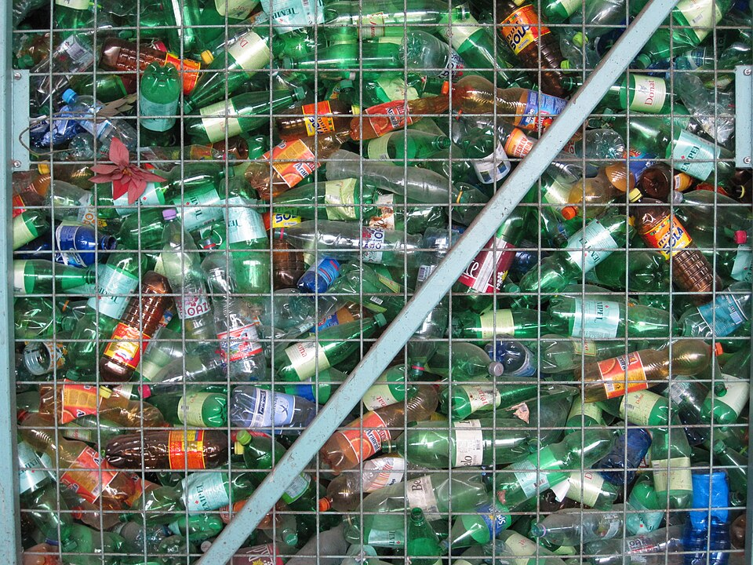
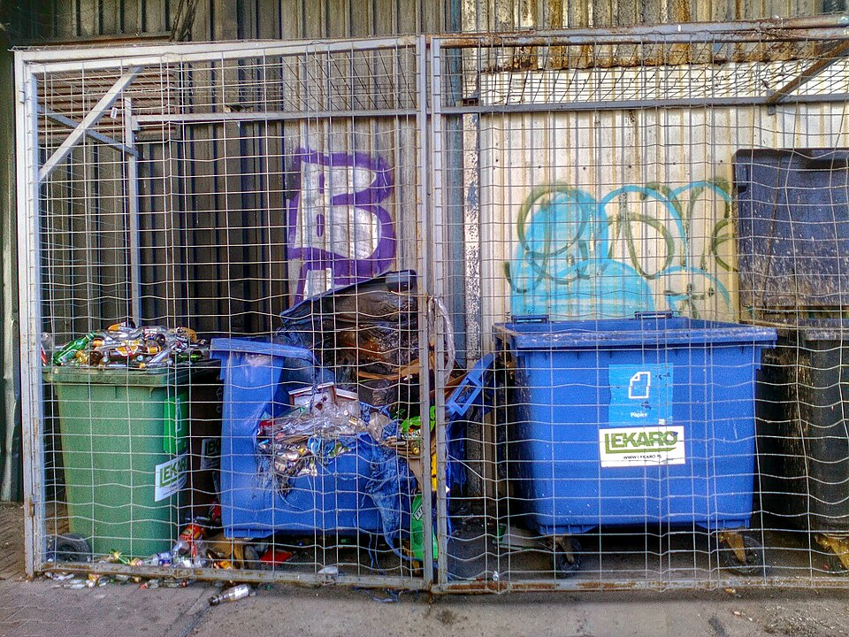

Por que reciclar na escola?
Todo dia a escola gera papel, plástico e restos de lanche. Quando separamos esse lixo, ele volta a ser matéria-prima e deixa de ir para o aterro.

Como separar o lixo
- Azul: papel e papelão
- Vermelho: plástico
- Verde: vidro
- Amarelo: metal
- Marrom: restos de comida
